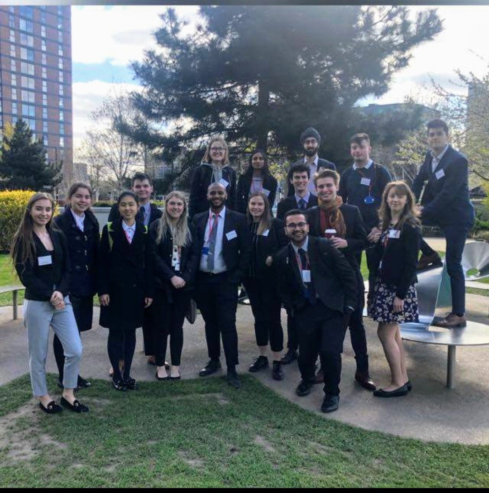

Barclays Spring Week

In the Spring of 2019, I was lucky enough to partake in the Barclays Spring Insight week. I was based at the Technology Campus in Knutsford and had the opportunity to see how technology manages everyday transactions. I was lucky enough to receive lectures from experts within their respecrive fields - from cyber security, cloud computing to AI and virtual reality.
During the week I shadowed many workers from different fields, from financial to technological, to better understand roles and how they feed into the wider working system. I also successfully collaborated with other graduates and interns in teams and to solve problems and to come up with new innovations for the company to expand into.
I was also fortunate enough to be offered the opportunity to be accepted into the summer internship at Barclays during the spring week, after a simple interview. As a result, during the summer of 2020 I will be working at Barclays Northampton Campus as a Technological Analyst Intern.